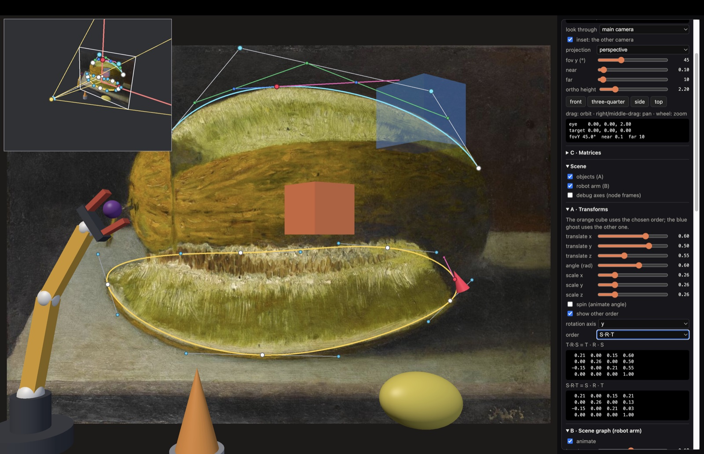
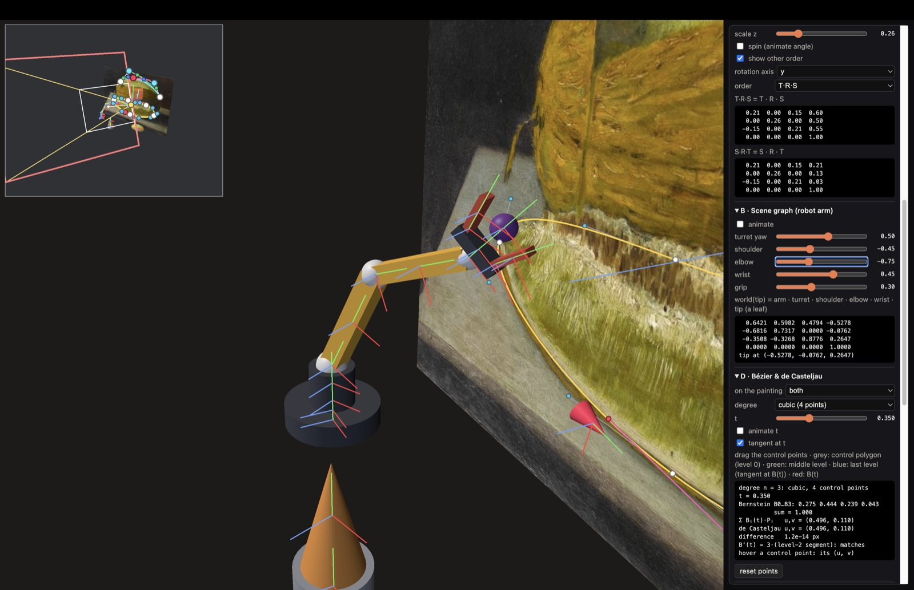
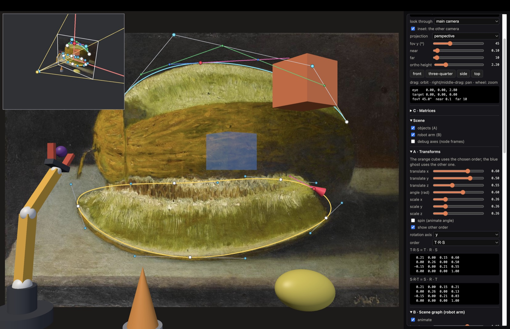
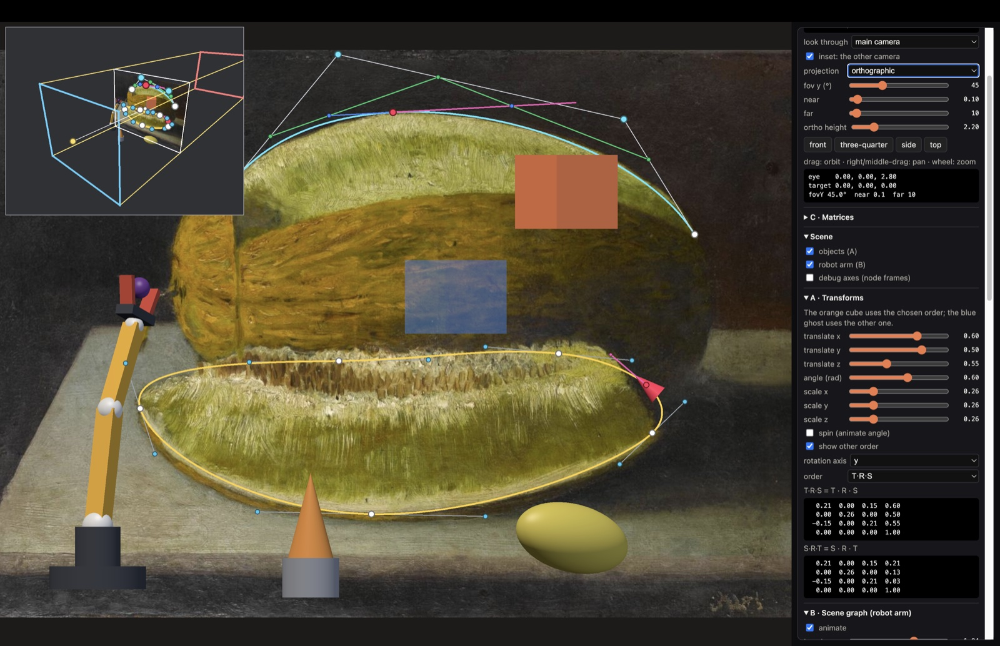
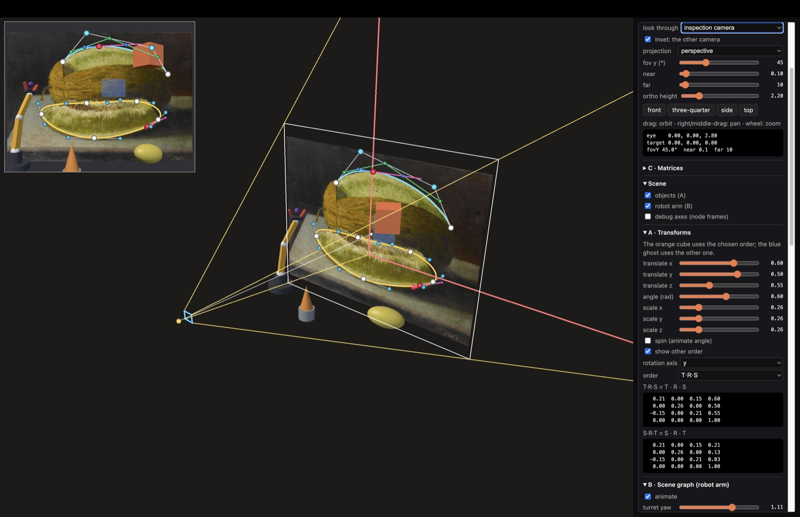
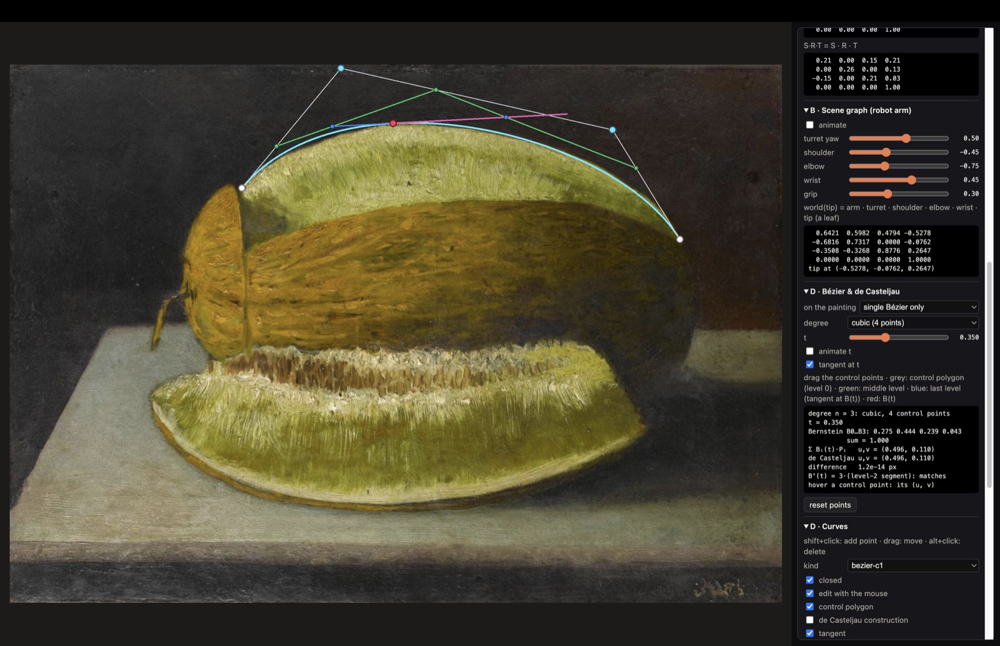
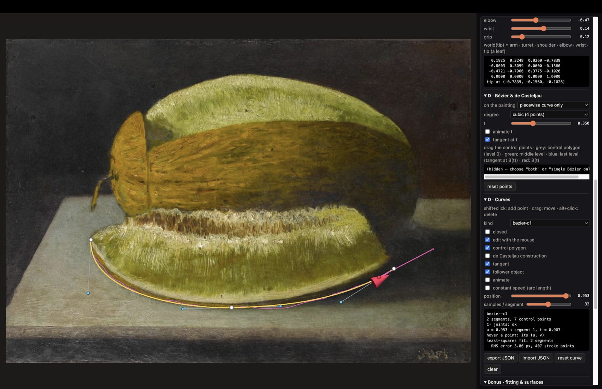
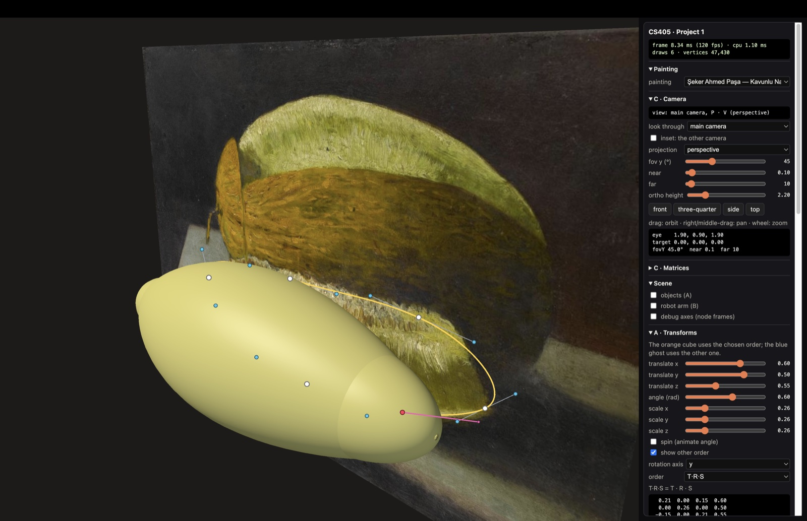
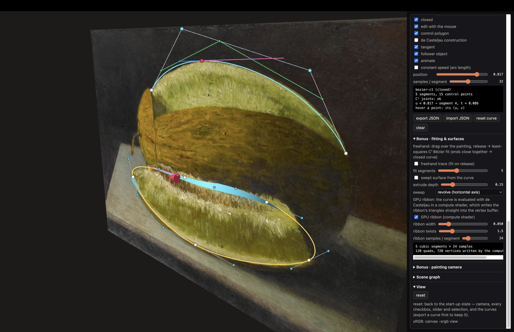
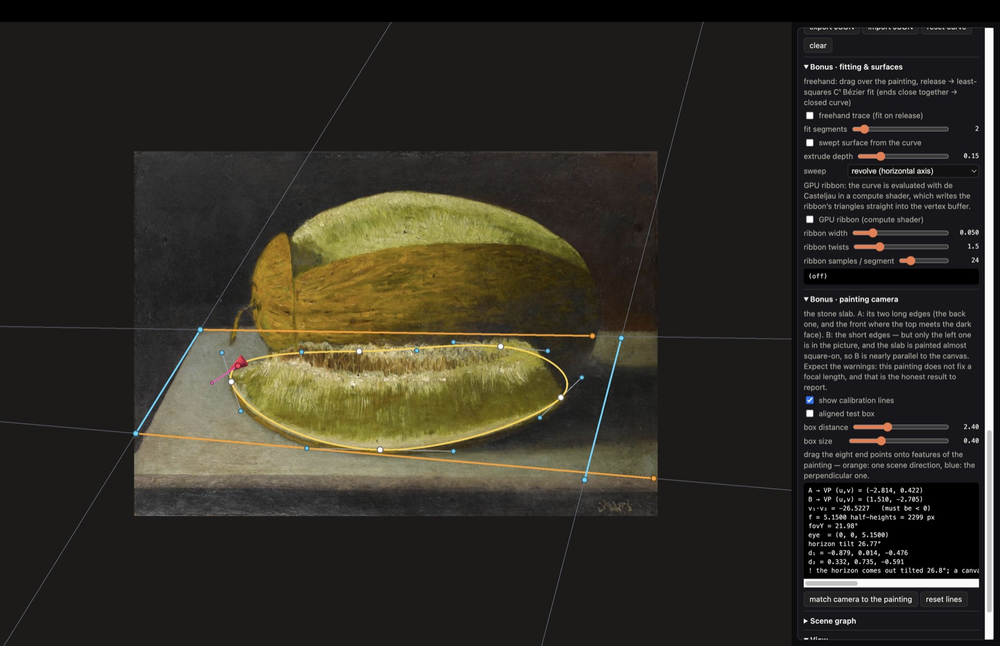

Şeker Ahmed Paşa — Kavunlu Natürmort (Still Life with Melon), Sakıp Sabancı Museum (1280 × 893 px, so the quad spans x ∈ [−1.433, 1.433], y ∈ [−1, 1], z = 0). I chose it for its organic contours: the cut melon slice has a long, smooth, closed outline (rind below, seeds above, two rounded tips) and the whole melon has one clean arc on top — good shapes for a C¹ piecewise Bézier curve and for a single cubic Bézier.
Conventions used everywhere. Matrices are Float32Array(16), column-major (element (r, c) at index
4c + r), uploaded to WGSL mat4x4f unchanged. Column vectors: p′ = M·p, so in multiply(A, B) = A·B
the matrix B acts first. Right-handed world; the camera looks down −z with +y up; clip space is WebGPU's
(z/w ∈ [0, 1]). Every vertex goes through pclip = P·V·M·pobject. 95 unit tests (the course's and mine) pass.
src/math/mat4.js implements identity, multiply, translate, rotateX/Y/Z, scale, transpose,
invertRigid and transformVec4. A rotation by θ in the plane of axes (i, j) sends
i → cos θ·i + sin θ·j and j → −sin θ·i + cos θ·j; the three axis rotations are this one pattern with
(i, j) = (y, z), (z, x), (x, y). Rigid inverse: for M = T(t)·R, M−1 = R−1·T(t)−1 = RT·T(−t),
i.e. upper 3×3 RT and translation −RTt — no general inverse, because RTR = I. It turns the view
matrix back into the camera's placement (picking rays, frustum drawing).
Three fixed objects (an ellipsoid "melon", a pedestal and a cone) are placed with T·R·S. The orange cube is driven from the panel (translation, rotation axis and angle, scale) and a switch selects M = T·R·S or M = S·R·T; the other order is drawn as a transparent blue ghost and both matrices are printed. Why they differ: matrix products do not commute. In T·R·S the cube is scaled and rotated about its own centre and then moved, so the translation column is exactly t. In S·R·T it is moved first, then rotated about the world origin (it swings on a circle) and the scale shrinks the translation too: the translation column becomes S·R·t. With t = (0.6, 0.5, 0.55), R = Ry(0.6) and S = 0.26·I the panel shows translation (0.60, 0.50, 0.55) for T·R·S and (0.21, 0.13, 0.03) for S·R·T (= 0.26 · Ry(0.6)·t). The rest of the code uses T·R·S (scale, then rotate, then translate), the natural order for placing a model.

SceneNode (src/scene/node.js) holds local, parent, children and
world; updateWorld(parentWorld) sets world = parentWorld·local and recurses depth-first, so a parent's
world matrix is ready before its children use it. The tree has 30 nodes. Counting the world root as level 1 it has 8 levels:
the deepest path is world → arm → turret → shoulder → elbow → wrist → finger L → finger L mesh, 7 steps below the root.
The robot arm is animated (turret,
shoulder, elbow, wrist, fingers) and carries an object: the "held fruit" is a child of the wrist and follows every joint
above it. Joint nodes hold only T·R; the scale that turns a unit cube into a link lives in a leaf mesh node, so it does not
stretch the rest of the chain. "debug axes" draws every node's local frame (x red, y green, z blue).
○ world
○ objects
■ melon (ellipsoid) T·R·S (fixed)
■ pedestal T·R·S (fixed)
■ cone T·R·S (fixed)
■ T·R·S demo T·R·S
■ other order (ghost) S·R·T
○ arm T(−1.05, −0.9, 0.55)
■ base T·S
○ turret T(0, 0.08, 0)·Ry(0.50)
■ turret mesh T·S
○ shoulder T(0, 0.14, 0)·Rz(-0.45)
■ shoulder joint S
■ upper arm T·S
○ elbow T(0, 0.42, 0)·Rz(-0.75)
■ elbow joint S
■ forearm T·S
○ wrist T(0, 0.34, 0)·Rz(0.45)
■ wrist joint S
■ palm T·S
○ tip T(0, 0.14, 0)
■ held fruit T·S
○ finger L T(−0.06, 0.055, 0)·Rz(0.30)
■ finger L mesh T·S
○ finger R T(0.06, 0.055, 0)·Rz(-0.30)
■ finger R mesh T·S
■ curve follower frame from the tangent
■ swept surface mesh rebuilt from the curve
■ gpu ribbon tessellated in a compute shader
■ painting-aligned box axes from the vanishing points

world(tip) = T(−1.05, −0.9, 0.55) · T(0, 0.08, 0)Ry(0.5) · T(0, 0.14, 0)Rz(−0.45) · T(0, 0.42, 0)Rz(−0.75) · T(0, 0.34, 0)Rz(0.45) · T(0, 0.14, 0)
By hand: Rz(a)·(0, L, 0) = (−L sin a, L cos a, 0) and the accumulated z-angles are −0.45, −1.20 and −0.75, so in the turret frame the tip is at x = 0.42 sin 0.45 + 0.34 sin 1.20 + 0.14 sin 0.75 = 0.1827 + 0.3169 + 0.0954 = 0.5950 and y = 0.22 + 0.42 cos 0.45 + 0.34 cos 1.20 + 0.14 cos 0.75 = 0.22 + 0.3782 + 0.1232 + 0.1024 = 0.8238. Ry(0.5) turns (0.5950, 0.8238, 0) into (0.5950 cos 0.5, 0.8238, −0.5950 sin 0.5) = (0.5222, 0.8238, −0.2853); adding the arm's position gives (−0.5278, −0.0762, 0.2647). The rotation part is Ry(0.5)·Rz(−0.75), whose first column is (cos 0.5 cos 0.75, −sin 0.75, −sin 0.5 cos 0.75) = (0.6421, −0.6816, −0.3508). The application prints exactly this:
0.6421 0.5982 0.4794 -0.5278 -0.6816 0.7317 0.0000 -0.0762 -0.3508 -0.3268 0.8776 0.2647 0.0000 0.0000 0.0000 1.0000 tip at (-0.5278, -0.0762, 0.2647)
View matrix. f = normalize(target − eye), s = normalize(f × up), u = s × f — two cross products give an orthonormal, right-handed basis (s ⊥ f by construction, u ⊥ both, |u| = 1 because s ⊥ f are unit). The camera's placement in the world is the rigid matrix C = [s u −f | eye]; the view matrix is its inverse, which by Part A is
V = [ sT −s·eye ; uT −u·eye ; −fT f·eye ; 0 0 0 1 ]
Degenerate case. If up ∥ f then f × up = 0 and normalising gives NaN. lookAt detects |f × up| < 10−6
and uses the first of (0, 1, 0), (0, 0, −1), (1, 0, 0) that is not parallel to f (looking straight down it picks −z, so
screen-up points from the objects, z > 0, towards the painting). The "top" preset view is exactly this case.
Perspective (WebGPU). With g = 1/tan(fovY/2): xc = (g/aspect)·x, yc = g·y, wc = −z and zc = A·z + B. Requiring zc/wc = 0 at z = −n and 1 at z = −f gives −A·n + B = 0 and −A·f + B = f, so A = f/(n − f), B = n·f/(n − f). OpenGL's matrix would map the near plane to −1 instead; WebGPU clips z < 0, so with it everything closer than 2nf/(f + n) ≈ 2n (0.198 here) would be clipped and half of the depth range wasted. Orthographic: x, y map [l, r], [b, t] onto [−1, 1] and the depth d = −z maps [n, f] onto [0, 1]: zc = −z/(f − n) − n/(f − n), w = 1.
Near/far and depth precision. With d = −z the stored depth is zndc = f(d − n)/(d(f − n)), whose slope is
n·f/(d²(f − n)): precision is spent near the near plane — half of the depth range covers only d ∈ [n, 2nf/(f + n)] ≈ [0.10, 0.20].
I use n = 0.1, f = 10 (the camera zooms out to at most 8 units, the scene is ~3 units across). The depth format is
depth24plus: at least 24 bits, possibly stored as a 32-bit float. At the painting (d = 2.8, stored depth ≈ 0.974) one
step of 2−24 — a 24-bit fixed-point step, and also the spacing of 32-bit floats in [0.5, 1) — is ≈ 4.6·10−6 world
units, far below the 0.004 by which curves are lifted off the painting, so there is no z-fighting. With n = 0.01 the step would
be ten times larger (4.7·10−5); f matters much less.
Controls and inspection camera. Left-drag orbits (a quaternion rotation, elevation clamped at ±89°), right-drag pans,
the wheel zooms; eye, target, fovY, near and far are shown in the panel, V and P under "C · Matrices". A second, fixed
inspection camera is drawn in an inset (or full screen, "look through"). It shows the main camera's frustum: the eight corners
are built in view space (rectangles at z = −n and z = −f of half-height d·tan(fov/2), or orthoHeight/2 for orthographic) and mapped
to the world with V−1 = invertRigid(V); a white rectangle marks the cross-section at the target's depth (what fills the
screen). The inset is a second command buffer submitted after the main pass, so every object reuses its uniform buffer: the
writeBuffer calls for the second view are queued after the first view has been drawn. A unit test checks that P·V maps
the frustum corners onto the corners of the clip box.



Bézier basis. A cubic Bézier is B(t) = Σ Bi(t)Pi with B0 = (1 − t)³, B1 = 3t(1 − t)², B2 = 3t²(1 − t), B3 = t³. They are the terms of ((1 − t) + t)³ = 1, so they sum to 1 and are ≥ 0 on [0, 1]: the curve is an affine combination of its control points and lies in their convex hull.
Endpoints. At t = 0, B0 = 1 and B1 = B2 = B3 = 0 (each has a factor t), so B(0) = P0. At t = 1, B3 = 1 and the others have a factor (1 − t), so B(1) = P3. ∎
Tangent and C¹. B′(t) = 3[(1 − t)²(P1 − P0) + 2t(1 − t)(P2 − P1) + t²(P3 − P2)], so
B′(0) = 3(P1 − P0) and B′(1) = 3(P3 − P2). Two segments sharing the joint Q0 = P3 are C¹ when
3(Q1 − Q0) = 3(P3 − P2), i.e. Q1 = 2P3 − P2: the next handle is the previous one mirrored
through the joint (c1NextControl). The editor stores the curve as A0 H H A1 H H …, so joints are shared by
construction; dragging an anchor moves both handles with it and dragging a handle mirrors the opposite one, so C¹ always holds
(the panel shows the largest tangent mismatch: 0).
One cubic Bézier and de Casteljau ("D · Bézier & de Casteljau"): four draggable control points trace the top contour of the melon (starting points fitted to points read off the image, RMS 1.4 px). A slider sets t and the construction is drawn: level 1 has three points Pi1 = (1 − t)Pi + tPi+1, level 2 two, level 3 the point B(t). The panel computes B(t) both ways (difference ~10−14 px) — expanding the three levels of interpolation gives exactly the Bernstein form — and checks B′(t) = 3(P12 − P02). A quadratic (3 control points) can be chosen to compare; converting it back uses degree elevation, which is exact.
Piecewise curve: the outline of the melon slice, a closed C¹ curve of five cubic segments; the global parameter u ∈ [0, 1] gives
segment i on [i/n, (i + 1)/n] (the same construction can be drawn there). Second family: both are implemented —
Catmull–Rom through every control point (tangents (Pi+1 − Pi−1)/2, C¹; an open curve repeats its end points so it
also passes through the first and last one) and the uniform cubic B-spline
(N0 = (1 − t)³/6, N1 = (3t³ − 6t² + 4)/6, N2 = (−3t³ + 3t² + 3t + 1)/6, N3 = t³/6; C², approximating). Each spline segment is a
cubic and is rewritten exactly as a Bézier (Catmull–Rom: P1 + (P2 − P0)/6, P2 − (P3 − P1)/6), which is how kinds are converted.
Interaction: shift+click adds a point, drag moves, alt+click deletes. A ray through the pixel (built in view space, mapped by V−1)
is intersected with z = 0; points are picked in screen space after projecting them with P·V. Animation: a cone rides the curve with
the frame y = normalised tangent, z = painting normal, x = y × z; u is not arc length, so "constant speed" re-parametrises it with an
arc-length table. Export: JSON in normalised (u, v) coordinates, u = (x + a)/(2a), v = (1 − y)/2 (Appendix B, curves/kavunlu-curve.json).

One page contains every part. The panel switches views (main/inspection camera, inset, projection, four preset views
with a smooth quaternion transition), resets the scene (camera, every checkbox, slider and selection, and the curves back to
their start-up values) and toggles the debug drawings (node axes, control polygons,
de Casteljau, tangents). The stats box shows frame time, CPU time, draw calls and vertices submitted per frame. Code is split into
math/ (vec3, mat4, quat, curves, fit, calibrate, ribbon), scene/, render/ and ui/; each mesh draw has its own 256-byte uniform slot
(dynamic offsets), overlays are instanced quads (WebGPU lines are 1 px), one batched draw per kind.
| scene state | draws | vertices | frame (ms) | CPU (ms) |
|---|---|---|---|---|
| start-up view (inset on) | 44 | 59 208 | 8.34 | 1.64 |
| main view only (inset off) | 21 | 29 520 | 8.34 | 1.30 |
| inspection view + inset | 44 | 59 208 | 8.37 | 1.53 |
| swept surface on | 22 | 75 600 | 8.33 | 1.11 |
Measured on a MacBook Pro (16-inch, 2023; Apple M2 Pro with its integrated GPU, 16 GB), Chrome 156 on macOS 15.6.1, 120 Hz display: each state was left alone until the smoothed readout in the stats box stopped moving (about 3 s), then read off. The frame time is capped by the display refresh (8.3 ms at 120 Hz), so it says little on its own; the CPU time is what each state really costs. The draw and vertex counts come from the same box and do not depend on the machine. The inset view is the expensive state: it draws the whole scene a second time and adds the frustum on top (21 → 44 draws, 29 520 → 59 208 vertices), and it is the state that moves the CPU time, by about 0.2–0.3 ms. Of those extra vertices the frustum is only 162, in no extra draw call — the overlay batches every line and point into one instanced draw per kind; the two extra draws, 6 vertices, are the inset's border and background. The swept surface is the opposite case: 46 080 extra vertices (80 profile intervals × 48 slices × 2 triangles, each emitted double-sided) in a single extra draw call, which does not cost measurably more (1.11 ms against 1.30 ms without it, within the run-to-run variation) — vertex count is not what limits this scene.
All five of the suggested extensions are implemented: least-squares Bézier fitting, a swept surface, a quaternion orbit camera, the curve evaluated in a compute shader, and the camera matched to the painting's own perspective. Each is described below in that order.
Least-squares Bézier fitting (math/fit.js). With P0 = Q0 and P3 = Qm fixed, B(t) is linear in
P1, P2; setting the gradient of E = Σ|B(tk) − Qk|² to zero gives 2×2 normal equations. The tk start as
chord-length fractions and are improved by Newton steps on (B(t) − Q)·B′(t) = 0. A drawn stroke is split at equal arc length;
each piece is fitted with its end-tangent directions fixed and the two handle lengths at every joint are averaged, which makes the
result C¹ (tests: a sampled Bézier is recovered; a 4-segment fit of a unit circle has RMS 1.4·10−4).
Surface of revolution / extrusion (scene/sweep.js): S(s, φ) = c + h(s)a + r(s)(cos φ e1 + sin φ e2), normal
∂S/∂s × ∂S/∂φ; the melon slice revolved about its own axis becomes a melon in front of the painting.
Quaternion orbit camera
(math/quat.js): orbiting composes qy(Δazimuth) ∘ qright(−Δelevation); preset views are reached with slerp of the
orientation (shortest arc, constant angular speed) and linear interpolation of target and distance, also into the degenerate top view.
Curve in a compute shader (render/shaders/ribbon.wgsl,
render/ribbon.js). The control points are the only thing the CPU uploads. A compute pass then
runs one invocation per quad of the ribbon: each evaluates the cubic at both ends of its own quad with
de Casteljau — the same three rounds of interpolation as math/curves.js, so the level-2 segment
gives B′(t) for free — builds a frame there and writes the six vertices of its two triangles. The output
buffer is created with STORAGE | VERTEX, so the buffer the compute pass wrote is bound as the
vertex buffer of the mesh pipeline in the frame that follows; nothing is read back. The cross-section turns
about the tangent by φ = 2π·twists·u, so across = cos φ·(−ty,
tx, 0) + sin φ·(0, 0, 1) and the surface normal is t̂ × across: at
twists = 0 the ribbon lies flat in the painting plane facing +z, and a quarter turn stands it on
edge. Any curve kind works, because every segment is first rewritten exactly as a cubic Bézier. The
default curve (5 segments × 24 samples) is 120 quads = 720 vertices in one extra draw call; at
64 samples per segment it is 320 quads = 1 920 vertices and the draw count does not change. WGSL cannot
run under node --test, so math/ribbon.js carries the same frame maths and the tests
pin the construction down there: the centre line is the curve, the frame is orthonormal, every quad is
halfWidth either side of it, each quad ends where the next begins, and both triangles wind to agree with
their normal.
Matching the camera to the painting (math/calibrate.js,
scene/calibration.js). The painting hangs as a quad of half-height 1 at z = 0, which
makes the painting's own plane an image plane whose principal point is the origin — so a camera at (0, 0, f)
looking down −z with fovY = 2·atan(1 / f) reproduces the picture exactly, and matching
the painter's camera comes down to one number, f. A vanishing point v is the image of the scene direction
d = normalize(vx, vy, −f), the ray from the eye through (vx,
vy, 0). Two perpendicular scene directions give d1·d2 = 0, that is
vx1vx2 + vy1vy2 + f² = 0, so
f² = −(v1·v2). The dot product has to be negative: the
two vanishing points must straddle the principal point. I mark the lines by dragging eight end points over the
painting rather than hard-coding them, and the panel shows both vanishing points,
v1·v2, f in half-heights and in painting pixels, fovY, the horizon's tilt and the
two recovered axes. The aligned box is the check: its edges run along d1, d2 and
d1×d2, so once the camera is matched they must come out parallel to the lines I
marked.
What the method says about these paintings. It needs a two-point view: a direction that runs across the canvas has its vanishing point at infinity and fixes nothing. I marked all five paintings and none of them gives a focal length I would trust. Kabataş Rıhtımı looked like the best candidate, because its foreground quay is seen obliquely, but with the marks on the quay's front edge, the railing above it and the side edge, the front edge turns out to be almost parallel to the canvas: its vanishing point lies about 21 painting widths to the left, the two vanishing points do not straddle the principal point, and v1·v2 = 44.4 > 0 — no real f. II. Selim Türbesi Kapısı fails the same way (v1·v2 = 35.4, one vanishing point about 27 widths out). In Moda İskelesi the pier building is small and seen nearly frontally; I used its roof and base lines and its vertical edges, both pairs are nearly parallel on the canvas, and the f = 6.94 that comes out carries that warning for both. Ormanda Karaca has no straight man-made edge at all, so there is nothing to mark. My own painting, Kavunlu Natürmort, does produce a number (f = 5.15, fovY = 22.0°) from the edges of the stone slab, but the slab is painted almost frontally and only its left short edge is in the picture, and the fit implies a horizon tilted 26.8°, which is nonsense for a still life on a level table. The honest result is that this painting does not determine a focal length, and the tool says so instead of printing a plausible-looking number: it warns when a vanishing point is so far out that f swings on one pixel of error, when the horizon comes out tilted more than 3°, and when the field of view falls outside 15°–100°.
| painting | v₁·v₂ | f (half-heights) | fovY | horizon tilt | verdict |
|---|---|---|---|---|---|
| Kavunlu Natürmort | −26.52 | 5.15 | 21.98° | 26.77° | frontal: not calibratable |
| Kabataş Rıhtımı | 44.38 | — | — | — | no fit (v₁·v₂ > 0) |
| II. Selim Türbesi | 35.37 | — | — | — | no fit: one vanishing point near infinity |
| Moda İskelesi | −48.20 | 6.94 | 16.39° | — | both pairs nearly parallel: f unreliable |
| Ormanda Karaca | — | — | — | — | no straight edges: nothing to mark |




writeBuffer runs before the frame's commands, so objects sharing one buffer would all
use the last matrix. Avoided from the start with one slot per draw; the inset view instead uses a second submit.I used an AI assistant (Claude) throughout the project, but only as a tutor: to understand the ideas behind each part, and to help me find my own mistakes when I was stuck. The maths, the code and the text of this report are mine (except from drafting and spellchecking help); no AI-written code was pasted into the repository.
| How I used it | Examples | What I did with the answer |
|---|---|---|
| Understanding the concepts | Why WebGPU's clip range z ∈ [0, 1] changes the third row of the projection matrix while OpenGL's [−1, 1] gives a different A and B; why the inverse of a rigid T·R is RT, −RTt instead of a general inverse; what C¹ continuity actually constrains about the two handles around a joint; why Catmull–Rom passes through its control points while a uniform B-spline only approximates them. | I asked for the reasoning step by step, not for a finished formula, then re-derived it on paper and wrote it up in my own words. If I could not reproduce a step without the explanation in front of me, I had not understood it yet and went back to it. |
| Debugging, the way I would ask a teaching assistant | The matrix printed by the application disagreeing with my hand verification in the 4th decimal; the Catmull–Rom curve missing its first and last control point; objects sharing a uniform buffer all drawing with the last matrix; a joint of the fitted curve landing one stroke point too far. | I described the symptom and asked what to check rather than what to change — which value to print, which half to bisect, which invariant a test should assert. I ran the checks myself; the causes and the fixes listed in §8 are what those checks turned up. |
| Writing this report | The paragraph under the table in §6; the discussion of the five paintings in §7. | The assistant helped me draft and edit the text. |
| Not used for | Writing the maths library, the shaders, the scene graph or the curve code; writing the main ideas of report; choosing the painting; producing the measurements in §6 or the figures. | — |
I treated everything the assistant said as a claim to be checked, not as an answer. That is why the derivations in §4 and §5 are written out in full, why the leaf-node matrix in §3 is verified by hand against the running application, and why the 95 unit tests (the course's and my own) are the final word: they fail if the maths is wrong, whatever any explanation claimed.
Kind bezier-c1, closed, five segments; control points in normalised painting coordinates (u, v), origin top-left,
v downwards. Every segment's P0 is the previous segment's P3, and the handles around each joint are mirrored (C¹).
{ "painting": "kavunlu", "kind": "bezier-c1", "closed": true,
"segments": [
[[0.186, 0.632], [0.204, 0.712], [0.33, 0.814], [0.47, 0.818]],
[[0.47, 0.818], [0.61, 0.822], [0.775, 0.73], [0.815, 0.675]],
[[0.815, 0.675], [0.855, 0.62], [0.79, 0.547], [0.7, 0.535]],
[[0.7, 0.535], [0.61, 0.523], [0.54, 0.546], [0.43, 0.548]],
[[0.43, 0.548], [0.32, 0.55], [0.168, 0.552], [0.186, 0.632]]
] }